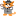

Desafio 02:
Olhe para o favicon de gatinhho!!
Inserir favicons é algo muito simples, basta inserirmos a tag 'LINK' na estrutura head, em cima do tile, depois selecionamos a pasta com o arquivo favicon com o ctrl + espaço.
Esse é um gatinho pequeno:

Esse é um gatinho grande: